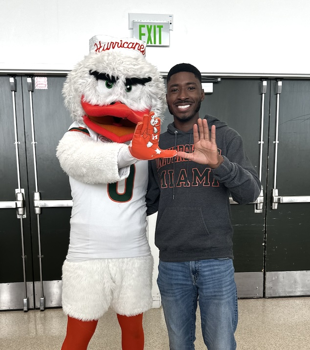

Discovering My Passion for Computing
Born in Seaford, Delaware, and raised in Salisbury, Maryland, I embarked on my technological journey at James M. Bennett High School.
It was there, at the age of 16, that I first explored the world of computing. Starting with user-fiendly platforms like Scratch and Code.org, I quickly discovered a craving for logical thinking and problem-solving. This level of thinking led me to enroll in an introductory Computer Science course during high school, which set the foundation for my academic pursuits in the field.
After a positive experience in the introductory course, I advanced to taking an Advanced Placement (AP) Computer Science course, where I strengthened my understanding and solidified my passion for the field.
Area of Study and Current Ambitions
As a dedicated Computer Science student at the University of Miami, my academic and personal endeavors revolve around deepening my understanding and enhancing my skills in programming and software development. I am particularly passionate about addressing real-world problems through innovative software solutions. This passion not only drives my project choices but also guides my learning path.
Throughout my studies, I have focused on mastering both the theoretical and practical aspects of computer science. My coursework and projects are selected to build a robust foundatin in coding, while also exploring advanced technologies such as artificial intelligence (AI) and machine learning.
I thrive on challenges that allow me to think critically and collaborate with others in a team to develop a solution to a problem. For instance, I have engaged in projects that tackle inefficencies in existing software systems, in return developing user-friendly and streamlined solutions that increase efficencies in the workplace.
My ultimate goal is to contribute to technology that not only solves a problem but makes a crucial impact on society. Whether that is developing software that enhances the user experience or assists with environmental conservation, I am eager to use my skills to make a difference. As I continue to further my skill set and work on more complex projects, collaborating with others will be a priority. The best ideas come from the one who is the most silent in the room, and through teamwork, major breakthroughs have the opportunity to happen. I look forward to opportunities where I can contribute, learn, and grow within the tech community.